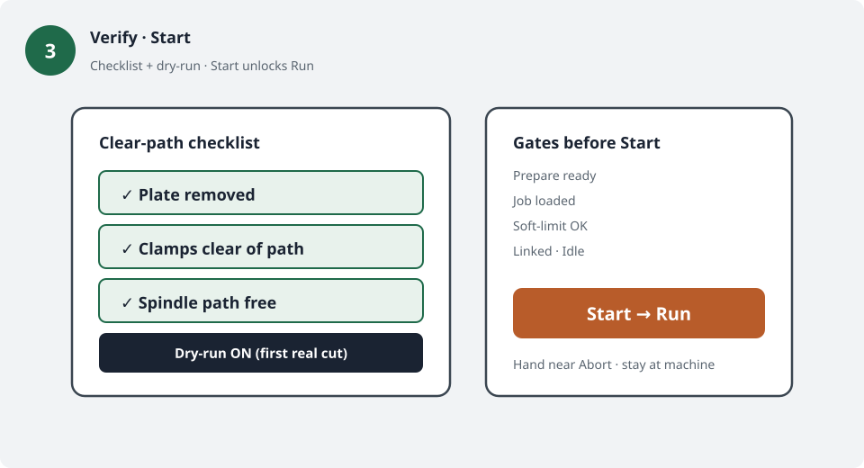

Last look before metal: soft-limit check, Simulate,
clear-path checklist, then Start. Entry needs
Prepare ready + a loaded job. First-test Stage 3 = no tool, Z high,
dry-run ON. Stage 4 scrap uses the same room with a real bit.
1
Soft-limit check
Confirm path sits on stock and inside travel · Start blocked if
outside
Soft limits are invisible fences from Calibrate. If the drawing
hangs past the bed, Start stays locked — fix stock, Material XYZ,
or the file in Prepare.
Phase switcher → Verify after
Mark ready in Prepare.
Expect
One dense Verify screen: soft-limit summary, Simulate, checklist,
Start. No Prepare scroll stack.
Glance at the visualizer: path on the stock rectangle? Bed
corners read map-style — NW NE top,
SW SE bottom. +Y back = up on screen.
Expect
Soft-limit line shows OK — or a clear “outside travel” reason
that blocks Start.
Play / Pause / Stop · speed · scrubber · banner
Preview — not sending to CNC
Simulate is a dress rehearsal on screen. The toolhead walks the
path; nothing moves on the real machine. Strongly recommended
before the first real Start.
Tap Simulate → Play. Optional: change speed
(0.25×–4×) or scrub start-at-line.
Expect
Banner: Preview — not sending to CNC. Z cues
(Retract / Plunge / Cut). Serial stays idle.
If the path looks wrong, go back to
Prepare (stock / Material XYZ / load)
— do not Start.
Expect
New file or zero change may clear Prepared; re-Mark ready before
Verify again.
Start streams G-code and switches you to Run. Dry-run strips
spindle words for an air pass — default on for the first real
machine job after Virtual practice.

Confirm: plate removed, clamps clear, spindle path free. Leave
Dry-run ON for first-test Stage 3 (no bit, Z
high) or first real Start after Virtual.
Expect
Checklist items OK; Start enabled only when Linked, Idle-capable,
soft-limit OK, Prepare ready.
Hand near Abort / E-Stop. Tap Start (UI or
Demon Shield). Mid-path: try Hold → Resume once on a practice
pass.
Expect
Phase switches to Run. Dry-run: no spindle
spin. Stop / complete returns to Verify (same job) or Prepare if
cleared.
Crash recovery (if a checkpoint exists) replaces this screen —
still one pane, not stacked under Start.
Expect
Resume-from-line / recovery controls before streaming again.
Text:
Jobs & run
·
First-test stages
· Stage 4 scrap still Starts from Verify after a real Z probe in
Prepare.